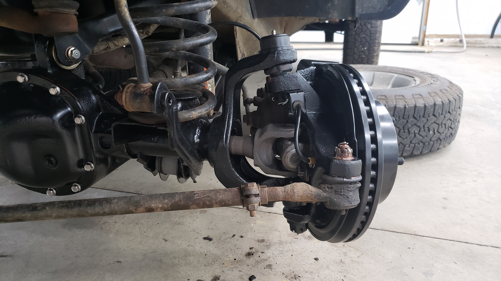
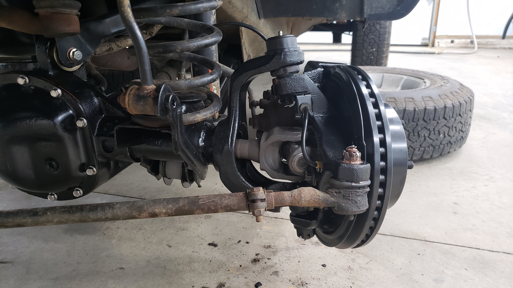
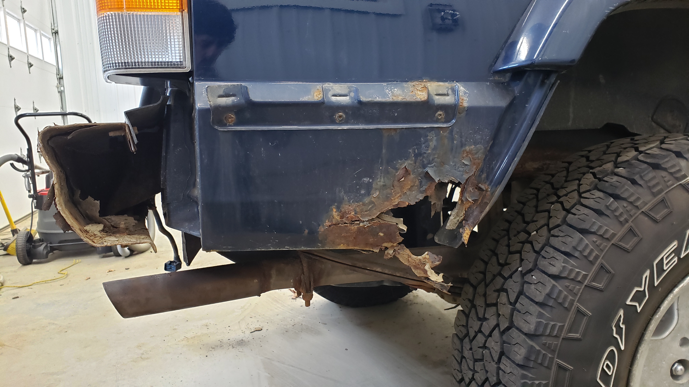
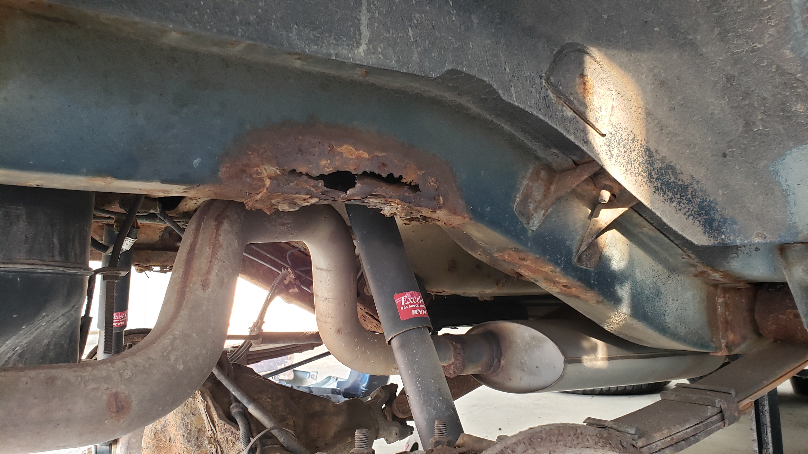
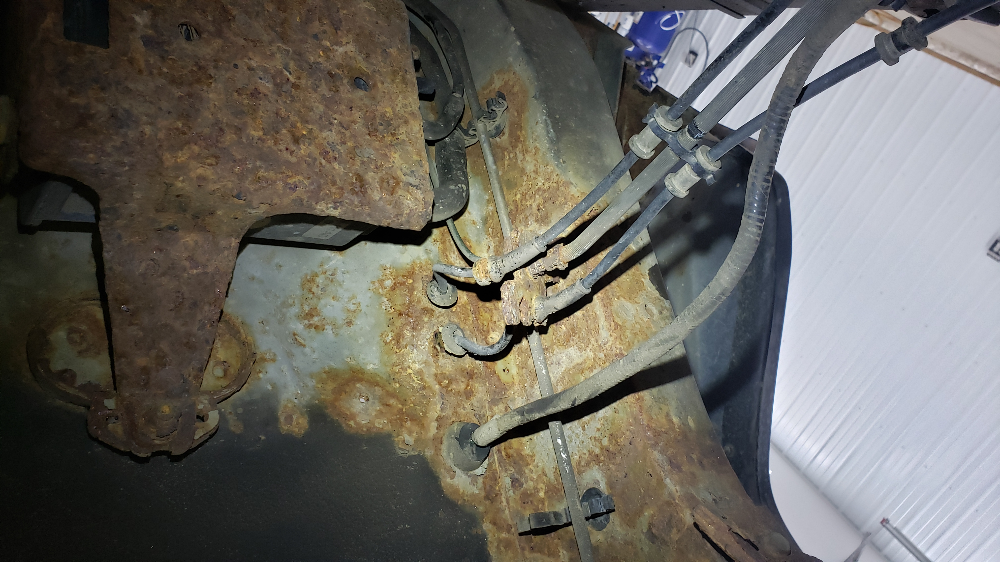
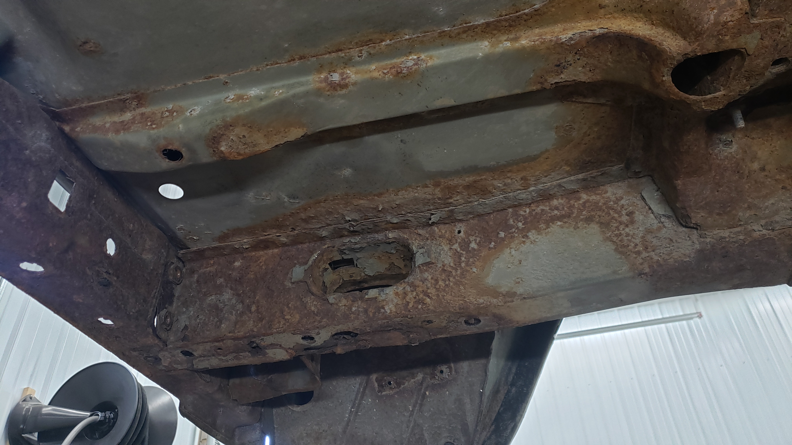
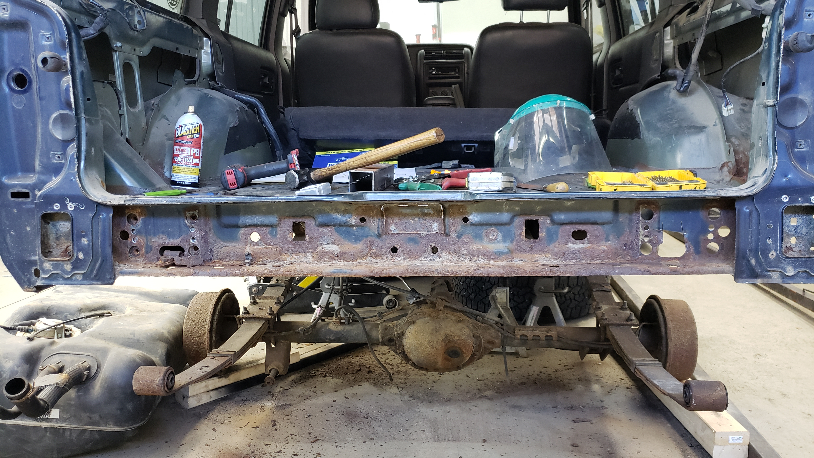
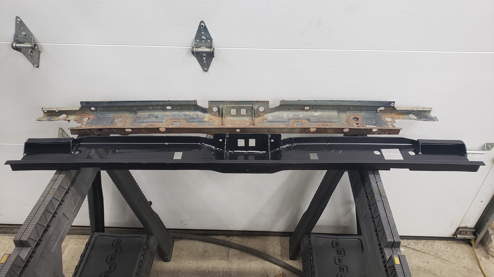

Background
I like to joke and say that anyone else would have sent my XJ to the junkyard.
Somedays if I’m in an especially sour mood from working on it, I’ll joke and say that anyone smart would have sent my XJ to the junkyard.
My Cherokee is rusty, has a laundry list of issues, gets 17 MPG on the good days, and is literally a brick on wheels. But I love it.
XJs aren’t fancy by any means and that’s basically what I like the most about them. It’s got a beefy drivetrain jammed into a small chassis, and a no frills interior. The only real complaint I have against them after owning one for 4 years is the factory headlights are scary dim but I resolved that with a HID projector retrofit.
I don’t believe Cherokees will ever be worth a lot of money. But I do believe they’ve bottomed out in price and are slowly increasing in value. I think because of how many were produced (over 2.8 million!) and the fact that almost anyone you ask has owned one, or knows someone that owned, there will be a nostalgia for them.
While I might be (or might not be!) jumping the gun and fixing up a Cherokee that others may deem as too far gone, I really believe this will become more and more of a common trend over the next decade as the limited pool of XJs slowly dries up. Suddenly those Cherokees that were once rust buckets will become good starting points for full out restorations. Someday…

Since May I’ve been spending the majority of my free time trying to fix it up. I did a full tear down restoration on the front axle which involved removing it from the vehicle, sandblasting it, painting it, and then replacing everything on it with brand new components.
 

From there I moved on to replacing every gasket on the engine, new oil pan, resprayed the valve cover, new timing chain, new starter, new alternator (mine was siezed!), and more.
After that I pulled the dash and replaced the leaky ac evaporator, and the clogged up heater core. I even splurged and bought a new dash top since mine was cracked and brittle.
With all that work done I figured the Jeep was ready to go for another winter. But upon inspecting the rear I realized the rust I had been ignoring for several years had reached the point where I could no longer pretend it didn’t exist.
For those unfamiliar with XJs, they’re a unibody vehicle but if you want to get technical Chrylser likes to call them a “uniframe”. They sort of but not really have a frame made of 16ga (1/16") steel beneath them that ties into the unibody.
The frames are galvanized from the factory, but once rust takes hold, it doesn’t take long for it to eat through the frame due to them being made of such thin metal. And in my case this was exactly what had happened.
In the rear of my Jeep, the rust had blown through the frame directly above where the bump stops used to be, and left other components with questionable structural integrity.
With the Jeep being due for it’s yearly state inspection in January, and my only other vehicle being a summer car I figured I needed to bite the bullet and start tearing into it. If luck was on my side I estimated I had about 2 months before snow would start to fly.
Assessing the Damage
By far the least enjoyable part of any rust repair job, is assessing the damage. As you dig further and further into your beloved vehicle, you hope with each part that’s removed it’ll be the last one. But it never is.
You have to remove all the rust because it’s like cancer. Even just a little bit of rust left behind will give it the chance to restart.
My Jeep came from the factory with the tow package which included a tow hitch reciever, and a gas tank skid plate. The reciever was rusted out by the time I took ownership of the Jeep, but I did occasionally use it to haul a small utility trailer around town.

Those rust flakes on the floor were from me hammering away on the hitch trying to remove it. I failed. The rust holes were not nearly as large prior to me going ham on it.

With the hitch out of the way I needed to remove the rear bumper. I ended up ripping off the plastic side pieces of the bumper since all of the screws were so rusted out that they would strip out if you stared at them too hard.
I’ll be doing the classic cut-n-fold (minus the folding part) and installing an aftermarket diy rear bumper. 
I knew there was a hole in the passenger quarter panel, but from what I could see from inside the wheel well it looked to be about the size of a half dollar. I had no idea how bad it was.
The driver side quarter panel looked better from the outside, but when peeked at from the inside it looked as if it was about ready to crumble apart. Which it totally did when I took the 2.5lb sledge hammer to it.

With things looking bleak and no hopes of getting away with a quick repair, I put the Jeep on some trusty Harbor Freight jack stands and removed the rear wheels. I needed to see how the frame looked.

That large rust hole is where the bump stop used to be. Looks like the bump stops stopped stopping bumps a long time ago.
Driver side is a little better by the non-existant bump stop.

The frame on the driver side was soft where the fuel neck passes through it. I gave it a good love tap with the sledge hammer and instead of a solid clang it emitted a soft thump. This appears to be a common problem for XJs.

The slowly growing pile of rust and junk parts.

I set the gas tank skid plate aside as I’m thinking of fixing it. The majority of it is in good shape, but the edges where it mates to the frame are toast.
I ended up dropping the gas tank since the tank was going to be in the way of some of the rust repair. I also didn’t feel that comfortable with the idea of welding so close to it. The straps holding it in had seen better days

With the rust looking worse, and worse I had no choice but to pull the rear interior. I needed to see what the floor looked like.

The passenger side floor wasn’t terrible with only one rusted through spot directly above the frame.

The driver side didn’t look terrible either.

But wait, what’s that rust in the corner of the wheel well?

That’s not good. Guess the floor is coming out too now.
With the gas tank out, and the rear suspension disconnected there was plenty of room. Don’t mind my preemptive angle grinder cuts.

I chopped off the exhaust right after the muffler to get it out of the way. Some fool (me) didn’t think it was worth the time to weld on flanges when they replaced the tail pipe and muffler last year. Oops.
Lots of rust on the floor and frame where the abs sensors pass through underneath the rear seat. 
The driver frame rail had several holes by the fuel neck passage hole. 
On the passenger side the frame was still okay but it was reaching the end of it’s life. Within a few years it’d probably be due for replacing.

Things weren’t looking good at this point. I realized I’d need to replace both frame rails, the floor, the shock crossmember, and the rear crossmember if I wanted to fix it properly.
The rust was actually so bad I had a hard time figuring out where to start the repairs. After about an hour or two of internal debates I decided to start with replacing the rear crossmember below the hatch.
Fabricating An Assmember
The rear crossmember (or assmember as I like to call it) was still structurally intact but the rust was beginning to get severe. I had thoughts about sand blasting it and painting it, but with the metal only being 16ga (1/16") I didn’t think there was enough good metal left to go that route.
My second idea was to buy an OEM replacement but it turns out Chrysler discontinued it…
That left no other option but to make a custom one. I’ve never done any serious fabrication till now but I was convinced it’d be “easy” since it was so straight. Full of confidence and ignorance I ordered a 11ga (1/8") 2x6 steel tube that was 72" long.
While waiting for the 2x6 to arrive, I drilled out all the spot welds to get the rusted out one free. I also performed the cut portion of the cut-n-fold on the quarter panels.


You never realize how thin cars are till you start removing pieces.

The crossmember removed. It’s missing part of its ends since I had to cut them off to free the crossmember. There’s a couple spot welds behind where the tail lights sit that are impossible to reach with a standard drill.

A few days later my 2x6 arrived. I was pretty excited to get started and forgot to take a picture of it prior to any cuts. All cuts were made with a 4 1/2" angle grinder while sitting on the floor of my shop.

Then several more cuts and a few welds later it was starting to take shape.


About 40 hours of work and many mistakes later I had a new crossmember that somewhat resembled the original one.

Test fitted in place. It felt amazing to get the crossmember to the point where it would fit into the Jeep.

Once it was fitted for the Jeep I sandblasted and painted her up with SPI epoxy primer. 
And 6 spot welds later, she was reinstalled.

I was beginning to feel like there was a chance I’d be able to fix this heap.